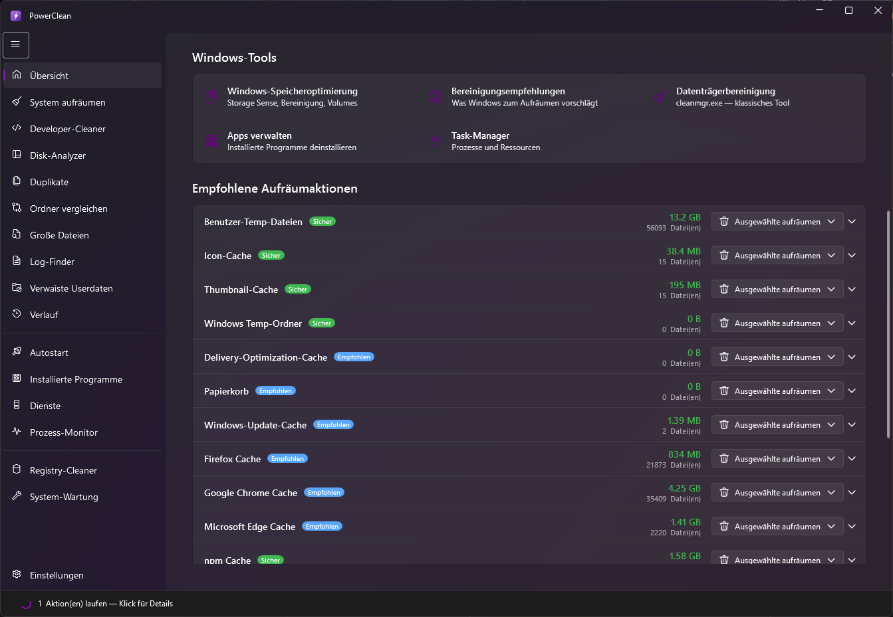
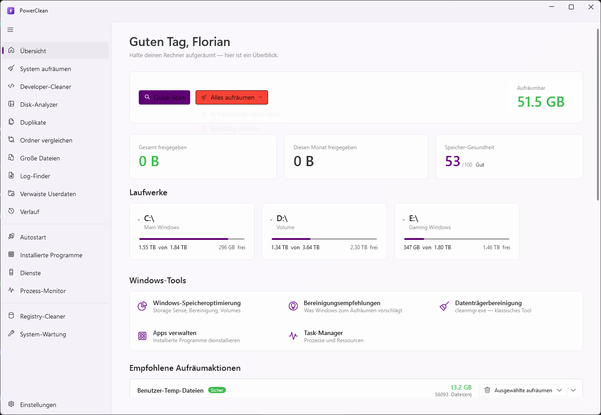
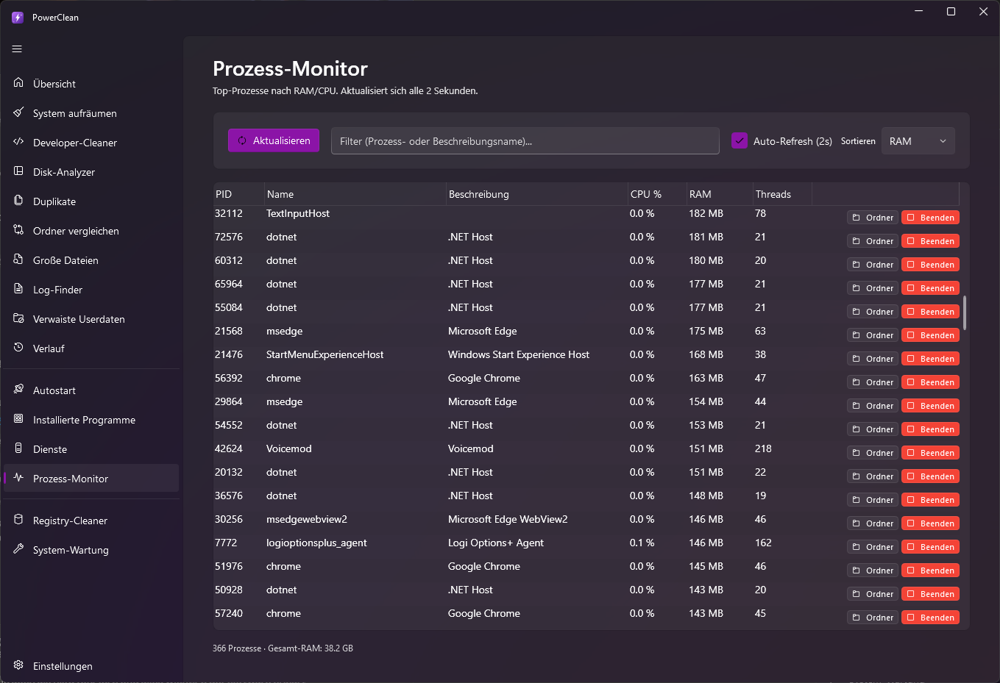
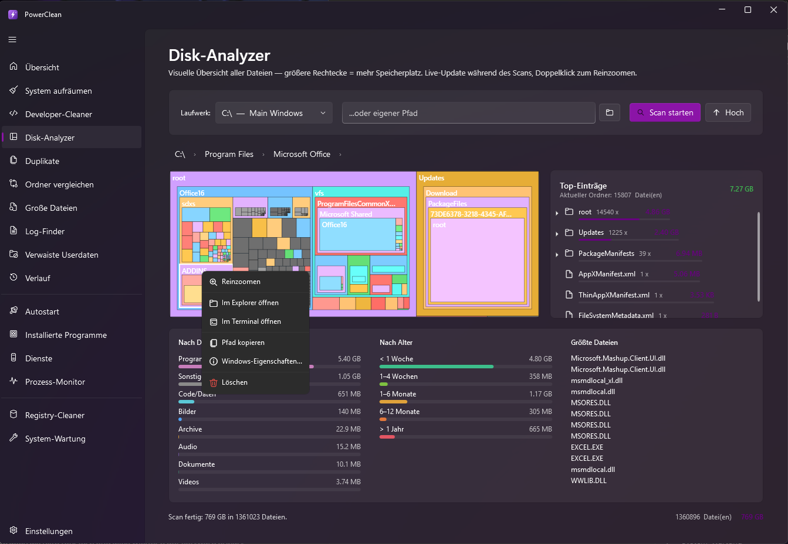
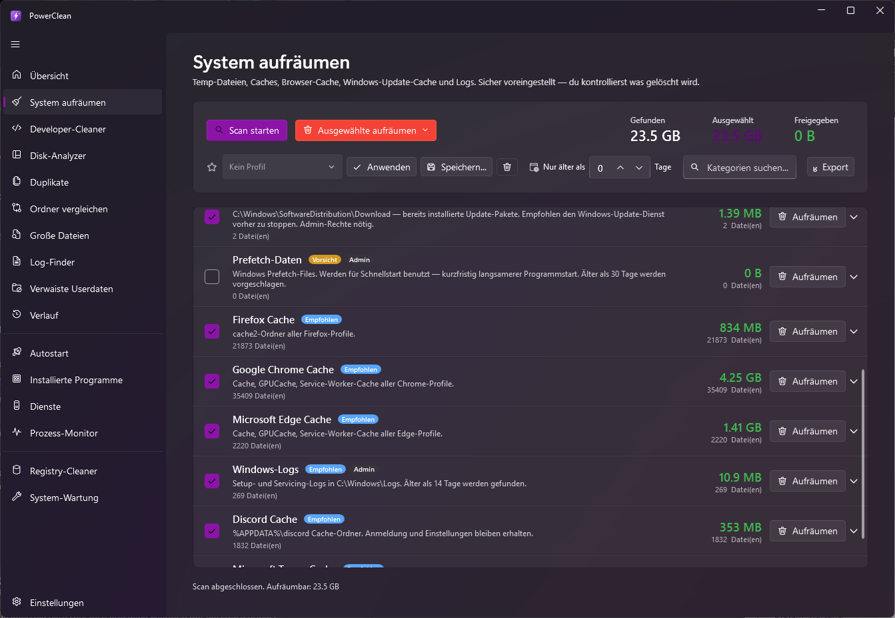
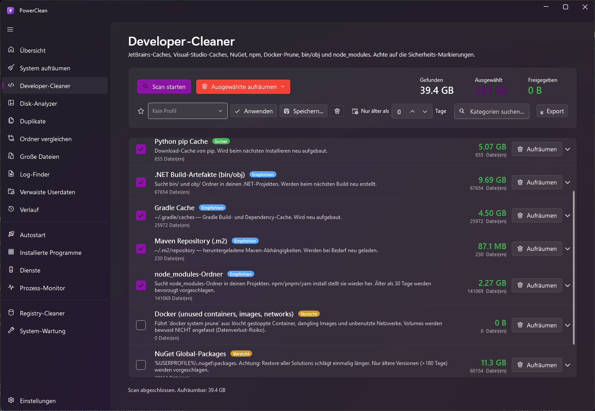
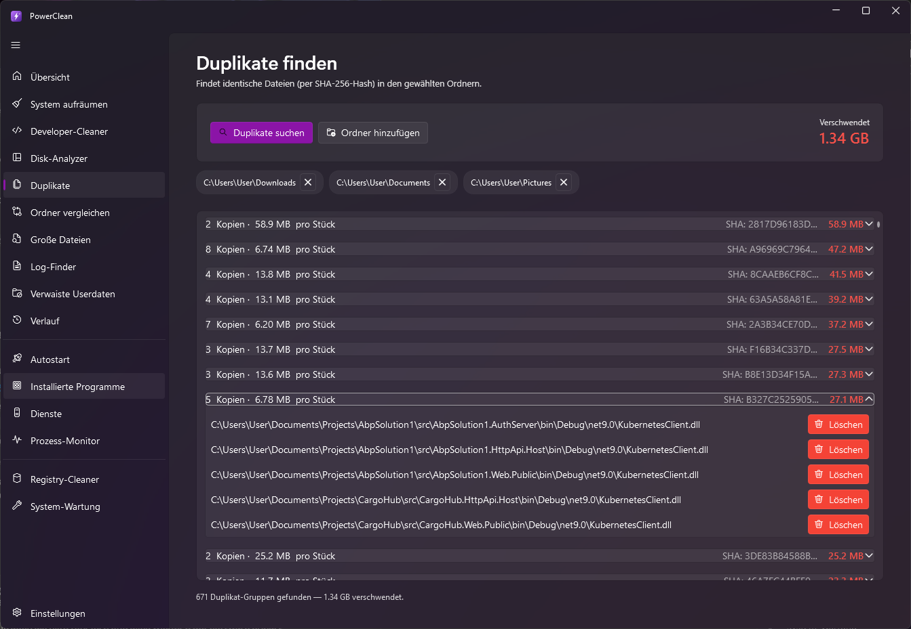
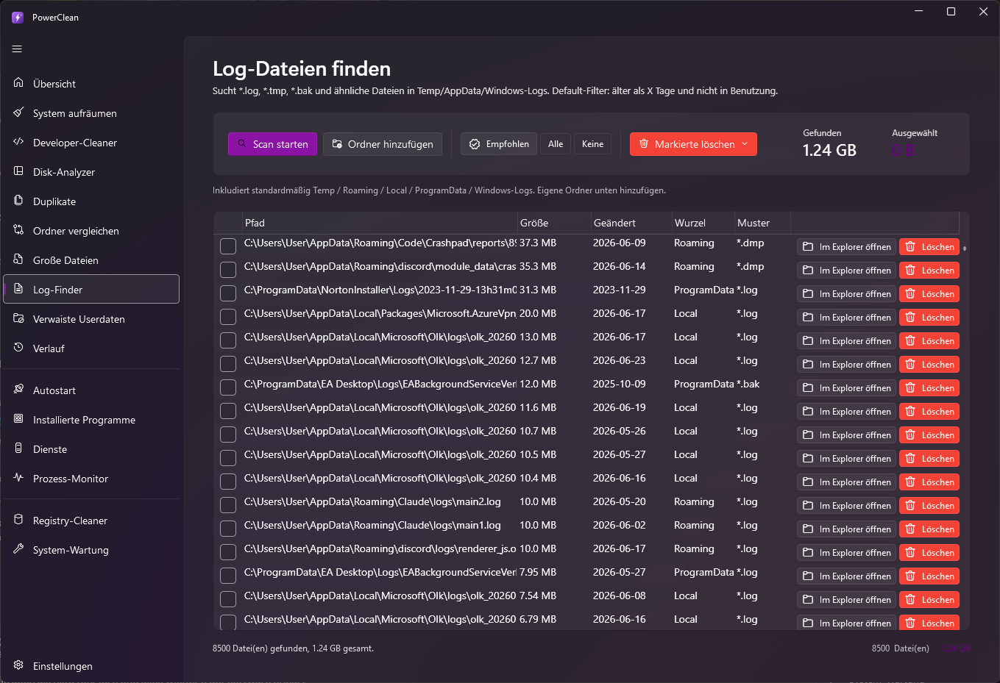
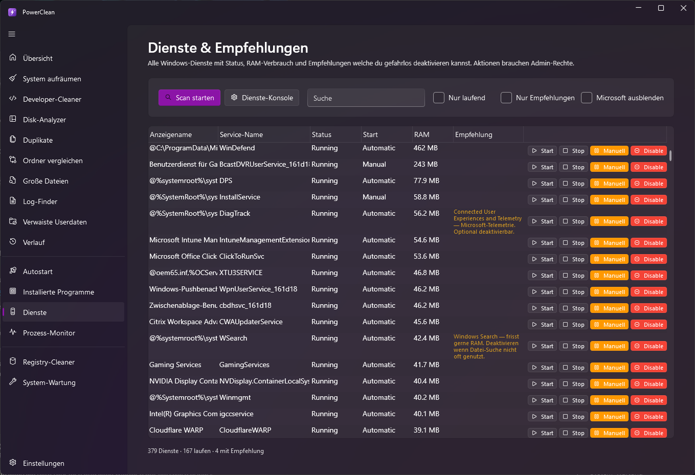
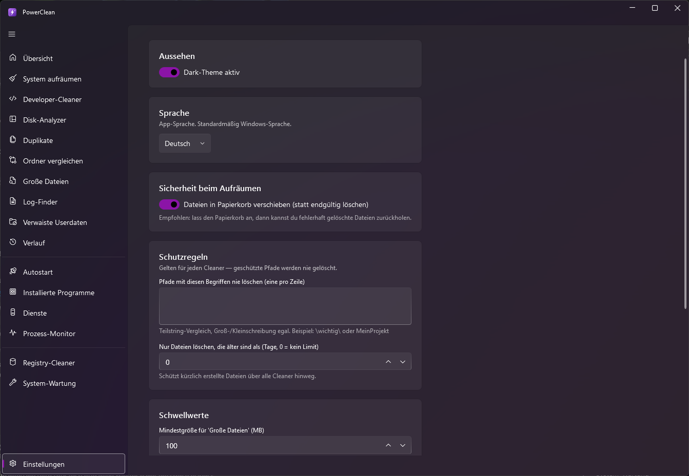

PowerClean räumt Müll auf, analysiert deine Festplatte, beendet selbst hängende Prozesse und findet Speicherfresser — alles in einer modernen App. Ohne Abo, ohne Werbung, ohne Haken.


PowerClean macht alles Wichtige — und mehr — ohne dich mit Werbung, „Pro"-Nag-Screens, gebündelter Software oder Datensammelei zu belästigen.
0 € — für immer. Kein „Free vs. Pro", keine versteckten Funktionen, kein Bundling von Browser-Toolbars. Der Code ist offen einsehbar.
Cleaner, Disk-Analyzer, Duplikate, Prozess-Monitor, Autostart, Dienste, Registry und mehr — kein Zoo aus Einzeltools mehr.
Standardmäßig geht alles in den Papierkorb, kritische Pfade sind geschützt, und ein Verlauf mit Wiederherstellen fängt Fehler ab.
Fluent-Design mit Dark- & Light-Mode, parallele Scans und Live-Fortschritt. Fühlt sich wie ein natives Windows-11-Tool an.
Räumt node_modules, NuGet, npm, Docker, Gradle, Maven, pip, Cargo, Go & .NET-Build-Artefakte — Gigabytes, die IDEs vergessen.
Der Disk-Analyzer visualisiert deine Platte als Treemap und schlüsselt nach Dateityp, Alter und größten Dateien auf.
Kennst du das? Ein Programm hängt, aber „Task beenden" tut einfach — nichts. PowerClean geht einen aggressiveren Weg und killt festgefahrene Prozesse wirklich.

Eine interaktive Treemap zeigt sofort die größten Ordner. Klick dich rein, und PowerClean schlüsselt jeden Ordner nach Dateityp, Alter und den größten Einzeldateien auf.

Von der Ein-Klick-Reinigung bis zu tiefen System-Werkzeugen — alles unter einem Dach.
Temp-Dateien, Caches, Browser-Daten, Windows-Update-Reste, App-Caches (Teams, Slack, Discord, Spotify) und mehr.
node_modules, NuGet, npm, Docker, Gradle, Maven, pip, Cargo, Go und .NET bin/obj — gezielt und sicher.
Treemap plus Aufschlüsselung nach Dateityp, Alter und größten Dateien.
Findet exakte Datei-Doppel per Hash-Vergleich und lässt dich sicher aussortieren.
Zwei Ordner gegenüberstellen: was fehlt, was ist neuer, was unterscheidet sich.
Spürt die größten Dateien und alte Log-/Temp-Dateien nach Muster und Alter auf.
Live-CPU/RAM, hängende Prozesse wirklich beenden, ganze Prozessbäume killen.
Boot beschleunigen: Autostart-Einträge und Windows-Dienste verwalten, aktivieren, deaktivieren.
Findet verwaiste Registry-Einträge und räumt sie kontrolliert auf.
Jeder Aufräum-Vorgang wird protokolliert — Papierkorb-Löschungen lassen sich wiederherstellen.
Pfade dauerhaft schützen und „nur Dateien älter als X Tage" löschen — gilt für alle Cleaner.
Auswahl als Profil speichern, per Klick anwenden und Scan-Ergebnisse als CSV/JSON exportieren.
Warum umsteigen? Ein direkter Blick auf das, was wirklich zählt.
| Funktion | PowerClean | Typischer Gratis-Cleaner |
|---|---|---|
| Preis | Gratis | Free/Pro-Modell |
| Werbung & Nag-Screens | Keine | Häufig |
| Telemetrie / Datensammlung | Keine | Oft |
| Gebündelte Zusatzsoftware | Nie | Manchmal |
| Hängende Prozesse killen | ✓ | — |
| Disk-Analyzer mit Treemap | ✓ | Selten |
| Developer-Caches (npm, Docker …) | ✓ | — |
| Wiederherstellen aus Papierkorb | ✓ | Selten |
| Portable-Version | ✓ | Teils |
| Open Source | ✓ | Meist nicht |






Lade PowerClean herunter und gib deinem PC Speicher und Tempo zurück. Kein Konto, keine Zahlung, kein Haken.